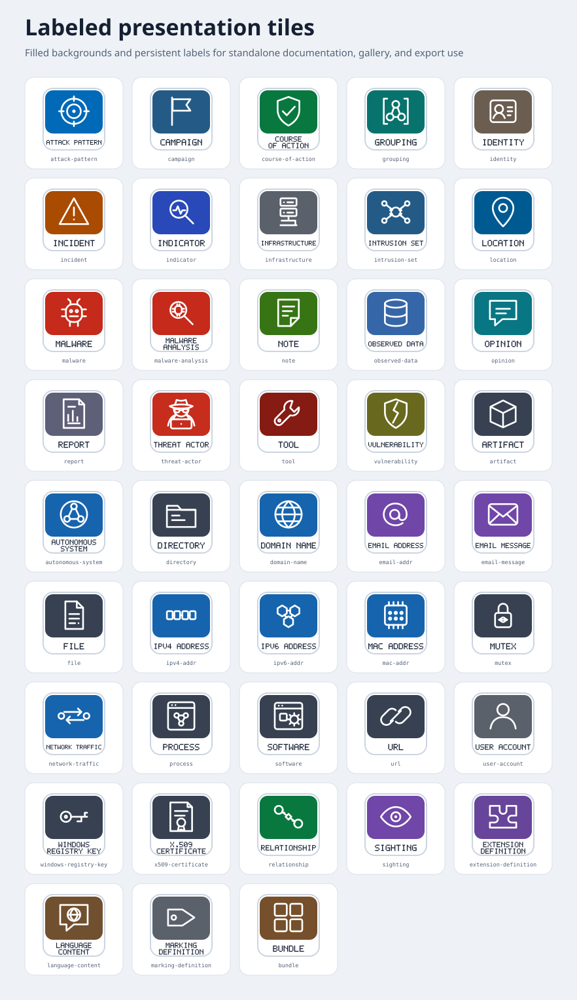
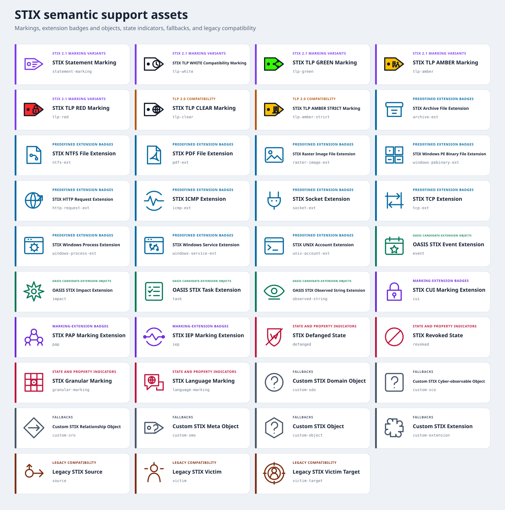
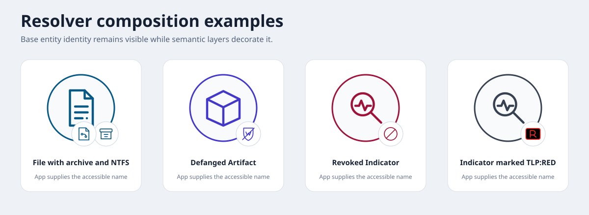
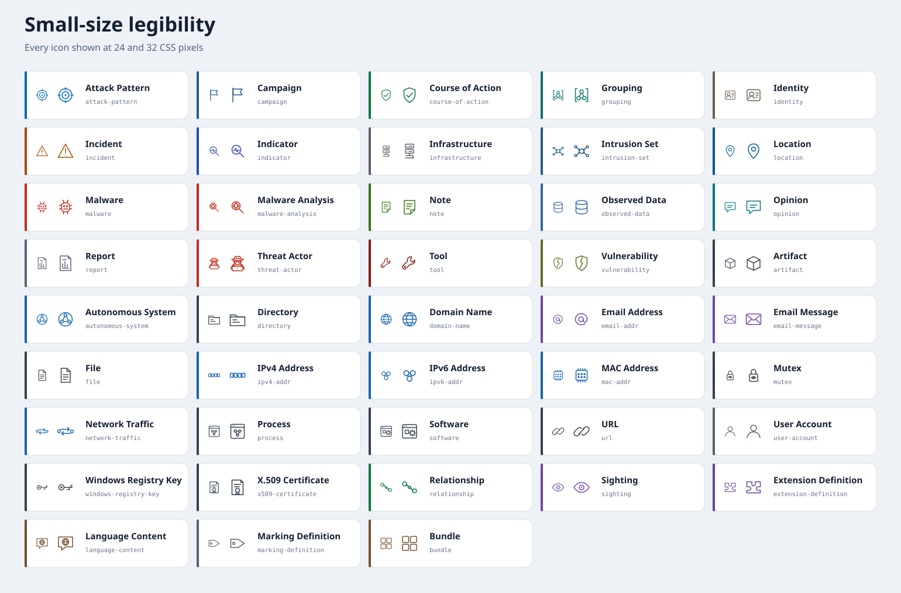
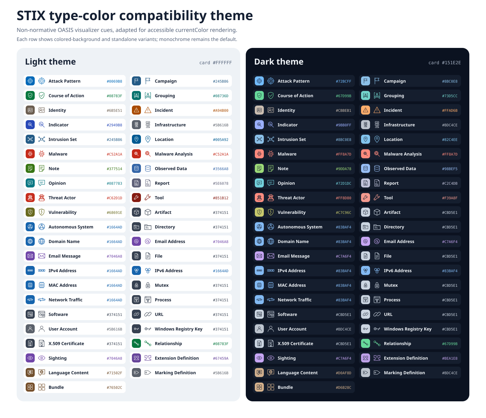

Labeled presentation tiles
Standalone tiles for documentation, gallery, and export use.
Complete coverage for 43 canonical entity types, plus semantic markings, predefined extension badges, candidate-extension objects, state indicators, fallbacks, and compatibility assets.
Marking meaning is resolved from IDs and definition content. TLP uses a fixed-color glyph plus a complete visible label so color is not the only cue.
TLP:WHITE is retained for STIX 2.1 serialization compatibility; current FIRST TLP 2.0 uses TLP:CLEAR.

Standalone tiles for documentation, gallery, and export use.

Markings, extensions, states, fallbacks, and legacy mappings.

Base object identity remains visible when badges are applied.

All canonical entity icons rendered at 24 and 32 CSS pixels.

Optional non-normative type colors; monochrome remains default.
Four representative monochrome SVGs test the principal object families at 24, 32, 48, and 96 pixels.
attack-pattern
file
relationship
marking-definition